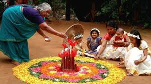

Onam, Hindu harvest festival that occurs in the Malayali month of Chingam, which overlaps with August and September in the Gregorian calendar. The 10-day harvest festival celebrates the Malayali New Year and is observed predominantly in the southern Indian state of Kerala. Other Indian regions, such as Uttar Pradesh, Gujarat, and Maharashtra, also have Onam celebrations. The legend behind the festival tells the story of King Mahabali and his selflessness and devotion to the Hindu god Vishnu.